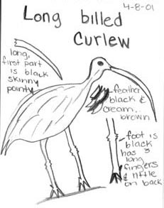

Wednesday, June the 16th, 2004
back to: title, date or indexes
Over in Ireland they're celebrating the centenary of Bloomsday, of course, today's date being exactly one hundred years since James Joyce first stepped out with Nora Barnacle, the day on which Ulysses is set. Here at Hooting Yard, we commemorate the day for a far more significant reason, for today is Dobsonday. It was on 16th June 19-- that Dobson published his first pamphlet, the notorious Description of & Reverie upon Forty Four Curlews, an astonishing, complex, unclassifiable and incomprehensible essay. It is, as you will have guessed, out of print. Dobson wrote it the day after a miserable charabanc outing to a deserted and windswept seaside resort during which he first became intrigued by the manufacture of cement, although this new fascination is not acknowledged in the text. In his newly published study Being Dobson, Nestingbird gives full weight to the importance of Dobson's first appearance in print. “From that day on,” says the critic, “Dobson wrote indefatigably. His ambition was limitless. He decided to write about everything in the known and unknown universe, not in any systematic way, but following his own strange yet spotless star. That, ultimately, he failed, and failed dismally, ought not detract from an appreciation of his genius. Go and sit next to a pond, and think about that, and scrunch up your hat in your fists as you do so.”
Dobsonday is usually celebrated by the worship of curlews. Here is a picture of one. Print it out, place it on your shrine, and contemplate it for hours and hours. That's what all of us at Haemoglobin Towers will be doing today.

This curlew hails from www.museumca.org, by the way.